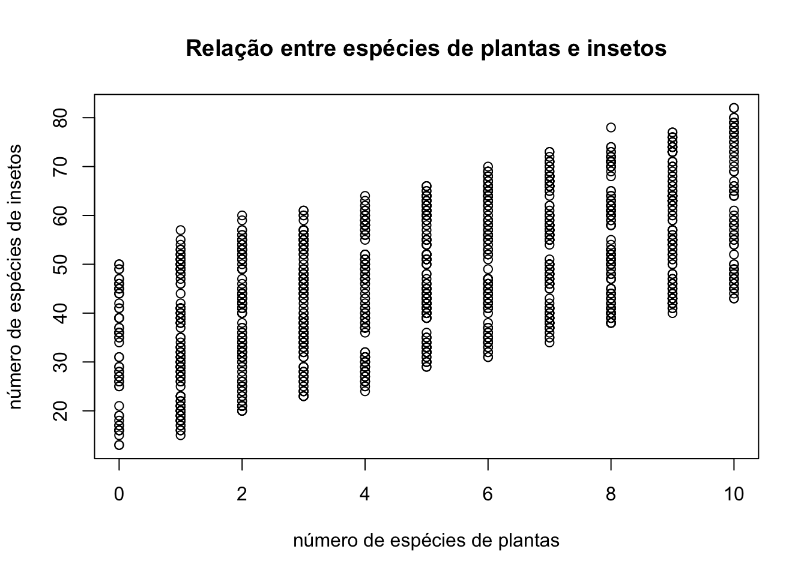

#replace 11111 by your student number
naluno <- 63515
set.seed(naluno)A test micro mini-assignment
Introduction
This is a trial to make sure everyone is up to speed on what will be required to hand-in assignments.
Typically, at the start of each mini assignment, there will be some code that will include setting up a random seed, which will always be unique to you: your student number. The next chunk code shows an example. Replace the number 11111 in the next chunk with your student number.
From now on, your results are yours alone 1.
Don’t touch this (section)
Nothing in this section is to be touched2. Therefore, don’t.
Also, never ever under any circumstances:
change the names of objects created by the template’s code.
delete any objects created by the code already on the template.
Failing to follow these two simple instructions might mean you have 0 on the assignment.
Your analysis
The first thing to do is to read in the data that you spent so much effort collecting in the field3 This reads the data.
Read the data using the next code chunk
fakedata <- read.csv("mydata.csv", sep="")Your data contains as many rows as quadrats sampled, and your data has the following columns:
- ID - a unique quadrat identifier
- nspI - number of insect species in quadrat
- nspP - number of plant species in quadrat
- habitat - type of habitat in quadrat
Explore the data, making at least a plot of the data. Add sensible legends to the plot.
# code for my plot in this chunk:
# tenho de fazer um gráfico com os dados, portanto vou comparar plantas com insetos, plamtas no eixo x e insetos no y
plot(fakedata$nspP,fakedata$nspI, xlab="número de espécies de plantas", ylab="número de espécies de insetos", main="Relação entre espécies de plantas e insetos")
Describe a different hypothetical ecological situation that this data could describe; for this you can change what each variable is, but the story must make sense, that is, e.g. a continuous variable should not be used for something that is the number animals, say, etc
Estes dados poderiam representar um estudo em parcelas de uma floresta, em que as variáveis seriam as seguintes:
ID - cada parcela
nspI - número de aves frugívoras (que comem frutos) observadas
nspP - número de espécies de árvores com frutos
habitat - tipo de habitat florestal
Next, add in the next code chunk the number of habitats that exist in the data, by replacing the value NA with an expression that gives you that number (this will mean that nhab will from then on be the number of different habitats in the data)
# replacing the value NA with an expression that
# provides the desired value gives you that number
nhab<- length(table(fakedata$habitat))
nhab[1] 4How many quadrats have you sampled in total?
nq <- nrow(fakedata)
nq[1] 1399Is that number larger or smaller than 1000?
# replace NA with either "larger" or "smaller"
# (include the "", that is the way to tell R the object is a word), depending on your data
logic1 <- "larger"And what is the mean of the number of plant species per quadrat, rounded to the 3rd decimal place. The rounding is really, really important, your answer will be incorrect if you do not use it 4.
mspP <- round(mean(fakedata$nspP),digits=3)
mspP[1] 4.966Very important: do not touch the code below
Do not touch the code below, as it produces a file with all your answers, that you will submit to moodle.
You are required to submit 3 files, the .qmd, the .html and .txt created when you Render (aka compile aka knit) the .qmd document:
- The .qmd file named “HandIn1_11111.qmd” 5
- The two files created when you compile the .qmd file
- thr .html file named “HandIn1_11111.html”
- the .txt file “Res11111.txt”
where in the 3 files the 11111 will be your student number6.
You should open the text file that gets created, just to see what it looks like. It might look like nothing that makes sense to you, so do not worry too much about it!
These will be the same files that you will hand in when you are doing this for real.
Footnotes
As a bonus, this .qmd document also shows you the required syntax to include footnotes. These appear below:
Footnotes
Check it by compiling the document and seeing how the results that follow, the mean of 10 Gaussian numbers, are different from that of (any of your) colleagues.
Here he go:
xs <- rnorm(10,rnorm(1,100,20),rnorm(1,12,5)) mean(xs)[1] 142.845We can add the mean dynamically in the text. Here the mean is rounded to two decimal places, so for student 63515 is 142.85.↩︎
The code in it (hidden in the .html, visible in the .qmd) simulates data with some useful features and creates a .csv file with the data, “fakedata.csv”, which you then use as your hard-collected field data.↩︎
To be fair, here, not really, you actually simulated the data, but let us pretend that was not the case and you actually spent quite some time collecting it. This should be in the file “mydata.csv” that was created the first time you compiled this document.↩︎
Always read carefully the instructions: you live in a world where things are automatically processed by scripts, therefore, the slightest mistake might render the code useless.↩︎
For reasons beyond my imagination in some computers this file might appear under Windows explorer as a file of type R HTML file. It is NOT and HTML file, but a .qmd file.↩︎
Your student number is added by default to the name of the
.txtfile, you need to add it manually to the.qmdand.htmlfiles by renaming the files manually↩︎